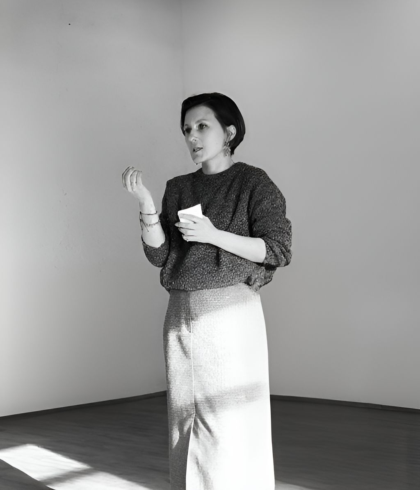

С собой
- Апатия, хроническая усталость, раздражительность
- Тревога, чувство вины, потеря смысла
- «Функционирую, но не живу»
Устали чувствовать себя на пределе — и не знаете, с чего начать? Каждый день как под копирку: работа, дом, дела. А внутри — усталость, пустота и тревога.

«За время своей практики я заметила: чаще всего нас истощает не сама жизнь, а привычка искать, "где жизнь дала трещину". В попытках найти причину проблем мы теряем последние силы.
Я работаю иначе. Не "что сломалось и почему", а "что уже есть и на что можно опереться". Именно это переключение — с поиска виноватых на поиск опоры — даёт энергию двигаться вперёд даже тогда, когда кажется, что сил совсем нет.»
Специализируюсь на работе с усталостью и выгоранием — проходила обучение в Бельгии. Использую метод ОРКТ: краткосрочный, но при этом глубокий подход, ориентированный на решение, а не на анализ проблемы.
Работаю со взрослыми индивидуально, с парами и по вопросам воспитания. Веду клуб и создала терапевтическую игру «С тобой всё в порядке» — для тех, кто хочет научиться опираться на себя.
Если хоть один пункт отозвался — эта консультация для вас.
ОРКТ — ориентированный на решение краткосрочный подход.
В большинстве подходов работа строится вокруг причин: что случилось, почему так сложилось, что из прошлого мешает. ОРКТ работает иначе — мы смотрим на то, чего вы хотите достичь, и на то, что у вас уже есть для этого.
Не «что сломано», а «что работает и на что можно опереться». Поэтому результат часто заметен уже в первых сессиях, а не через месяцы работы.
Бережно разбираем то, что происходит прямо сейчас — без осуждения и оценок
Опираемся на ваши реальные сильные стороны — то, что у вас уже работает
Находим посильные действия, которые можно сделать уже в ближайшее время
Разберём вашу ситуацию и запрос — без осуждения и оценок
Вы поймёте, как устроена работа в ОРКТ и как работаю я
Сформулируем, к какому результату вы хотите прийти
Увидим, на какие ваши сильные стороны можно опереться прямо сейчас
Определим первый простой и реалистичный шаг — тот, что можно сделать уже на этой неделе
Иногда одной сессии достаточно, чтобы увидеть ситуацию совершенно по-другому и почувствовать ощутимый сдвиг. Вы уходите не с абстрактными советами, а с конкретным шагом на ближайшие дни.
Если вы захотите продолжить — я буду рядом. Выбираете удобный формат, темп и договариваемся о следующей встрече.
Если решите не продолжать — это тоже нормально. У вас в любом случае останется бо́льшая ясность и понимание, в каком направлении двигаться.
Я понимаю, что довериться новому специалисту непросто. Нужно время, чтобы понять: «Мой ли это человек? Тот ли подход? Будет ли мне комфортно?»
Именно поэтому я предлагаю начать с одной встречи — по специальной цене.
Пробная сессия — это не «пробник» и не урезанная версия. Это полноценная работа, с которой многие уходят уже с ощутимым сдвигом.
Выберите то, что сейчас кажется подходящим. Если в процессе поймёте, что хотите большего — можно перейти в пакет, доплатив разницу.
Если хотите работать в своём темпе, по запросу
Если есть конкретный запрос, который хотите проработать за несколько сессий
Если чувствуете, что нужна более глубокая и системная поддержка
Начните с того формата, который сейчас кажется комфортным. Если в процессе поймёте, что хотите большего — можно доплатить разницу и перейти в пакет.
Пишу о том, как справляться с усталостью и выгоранием — через научно обоснованные методы, понятным языком.
Выберите удобное время — запись занимает меньше минуты. После записи я напишу вам в Телеграм или Max в течение часа, подтвержу встречу и пришлю ссылку на оплату.
Записаться на встречу